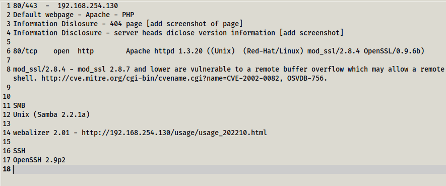

Researching and Taking Notes
Since we have started the enumeration, we have been collecting bits of information along the way. In this section we will cover the best practices when taking note. Taking good notes will help you organise your work and find exploits, as well as create a good report for your client.
When taking notes we want to always think about the most valuable data and vulnerablity.
Think of the least secure ports - thats where you want to find information to exploit a way inside the network.
Ports 80, 443, 139 are the most vulnerable.
You want to organise your notes from the most vulnerable to the least.
My notes so far

We will go through all the notes to find vulnerabilities/exploits for each one and list them in a new file - vulnerabilities.txt.
With these notes I will go to Google and search for exploits for results we found. We will begin by searching for mod_ssl exploit.
Google search mod_ssl

If we click on the second link https://www.exploit-db.com/exploits/764 we get information about the exploit and the even the script to run it. This exploit is a Remote Buffer Overflow - which will enter a character repeatedly. The site gives you the option to download the exploit and also download a vulnerable app as a virtual machine.
We will make a note of this vulnerability in our notes.
Google search apache 1.3.20

The same link from exploit-db.com has appeared so we can say that exploit works for both Apache & SSL
If we click on the link at the top cvedtails.com, for this site we can just focus on the score of each exploit.
www.cvedetails.com

If you see any exploits that are red then it means they will most likely work! The score is to rate the effectiveness of the exploit.
Next is the SMB wo we will look up exploits for Samba 2.2.1.
Google Samba 2.2.1 exploit

Rapid7 are the same people who made metasploit - so they're good!
When we click on the Rapid 7 link we get a description of the exploit, as well as how to run it on metasploit.


From this we can get some valuable info and save it to our notes.
We will click go to the thrid link at the bottom. This is another buffer overflow - this script is in Pearl, so you would need Pearl to run it.

It also give you the options for which tags to run on the script.
Searchsploit
We can also use the terminal to search for exploits - this is very good for a scenario where you are without internet. Lets say we wanted to aerch for some more exploits for the Samba 2.2.1a. I would use searchploit then the then samba 2. We do not put the full version number so searchsploit can look for all possible versions.
searchsploit samba 2

Code snippet - we can see
When we are writing our reports/assement or client, we want to have it in a easily readable format.